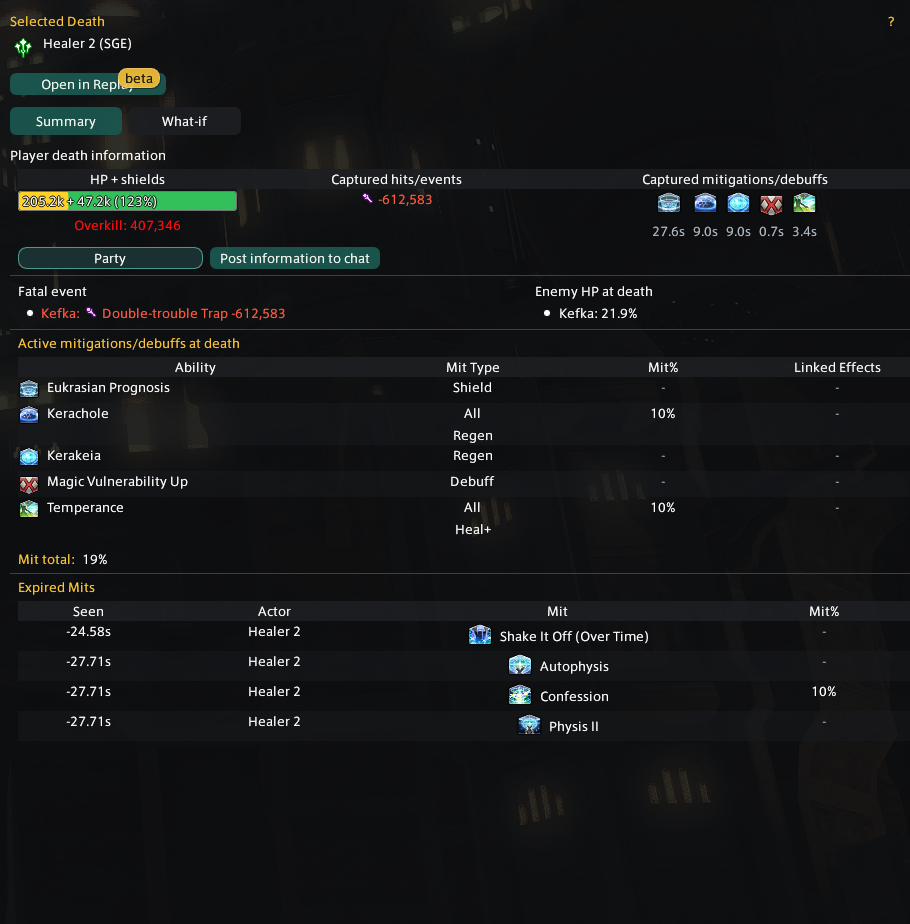
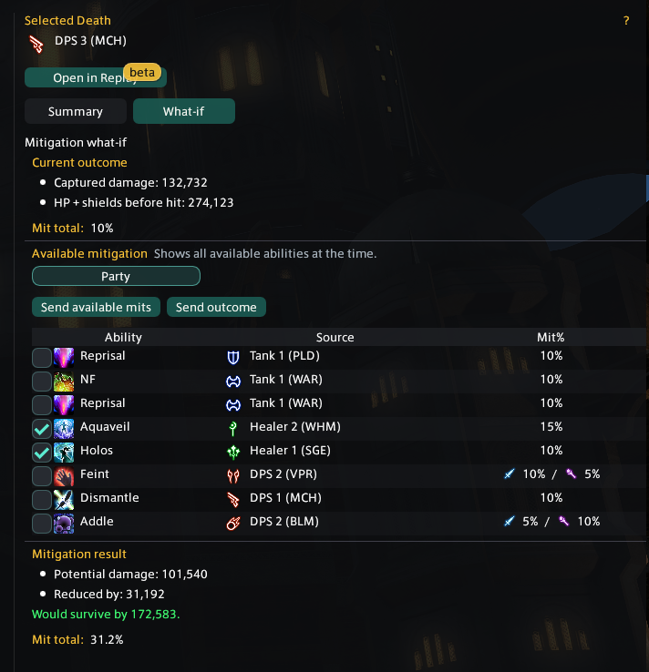

Pulls
Choose the active Current pull or a completed pull. Search by the name of a player who died, filter by duty, collapse the pull list, or use its saved group colors to distinguish separate duty instances.
Review
Review is the main workspace. It separates the order of deaths from the evidence attached to the selected player.
Choose the active Current pull or a completed pull. Search by the name of a player who died, filter by duty, collapse the pull list, or use its saved group colors to distinguish separate duty instances.
Shows death order, pull time, player, job, and fatal event. Clicking a death selects it and opens that player's lead-up directly beneath the row.
Summary explains the captured outcome. What-if tests alternate mitigation. Open in Replay jumps to the saved pull near that death.
The red event is the captured hit or event tied to the KO. Damage is shown after mitigation. A multi-hit fatal sequence can contain more than one event rather than pretending only the final line mattered.
The killing row ends at 0 HP. The darker part of the bar preserves the HP lost to the hit, and shield loss receives its own darker overlay. Hover a bar for exact before, damage, and after values.
Active mitigation, shields, enemy damage-downs, and target effects show what applied at the snapshot. Expired effects provide nearby context without claiming they covered the hit.
When enemy HP was captured, Summary lists its percentage at the time of death. Hover it for exact HP and the captured entity identifier.
If no normal damaging hit explains the KO, Better Deaths labels the result as a wall, environmental death, scripted KO, reconnect spawn KO, or another non-hit KO when the evidence supports it.
Hover the ? beside Post information to chat to preview the exact recap lines. The preview follows the current Name Redaction and chat-branding settings. Choose a channel, then Ctrl + click the button to post it. Other Better Deaths users present can receive a local pull link with the recap.

Click the selected timeline row again to collapse or reopen its lead-up. Drag the bottom edge to change how much vertical space it uses.
What-if
What-if replays the selected fatal damage through mitigation choices that were available in the captured context.
The result depends on captured timing, damage type, status data, shields, and target eligibility. Use it to compare options, then confirm the plan with the party.
